Flight model definition
- Step 1: Gather Data
- Step 2: Settings Dimensions
- Step 3: Positioning wheels and contacts points
- Step 4: Settings the aircraft weight and weight distribution
- Step 5: Base aerodynamic parameters
- Step 6: Control surfaces
- Step 7: Flaps and spoilers
- Step 8: Advanced wing effects
- Step 9: Advanced engine effects
- Step 10: Legacy field definitions
Note: This tutorial focuses on flight model, aerodynamics and engine performance. It does not detail airplane systems.
Note: As this tutorial make reference to
Aircraf Editor, it is recommanded to read the Aircraft Editor section before.
Step 1: Gather Data
The new flight model of Microsoft Flight Simulator requires a lot less data to function as our legacy simulator. However, there is a minimum set of data necessary, and the more data you have, the easier it is going to be to make an accurate flight model.
Data necessary to start includes data such as:
- Dimensions: Wing area (sqft), Wing Span (ft)
- Weight data: Maximum Weight MTOW (lbs), Empty Weight (lbs)
- Maximum lift data: Stall Speed Clean and Full Flaps (kcas)
- Engine data: Maximum Power (hp), thrust (lbs) or torque (ftlbs)
- Full power performance data: Maximum Speed (kcas), Maximum Climb Performance (ft per minute), Cruise Speed (kcas), Maximum Climb Speed Vy (kcas)
- Aerodynamic performance data: Best glide ratio, Best glide speed (kcas)
There are situations where not all data is available or consistent. Some POH may include security margins. To resolve performance data and make sure that they are consistent, aerodynamic formulas may be used to control data.
We recommend using an excel calculation sheet that controls performance data:
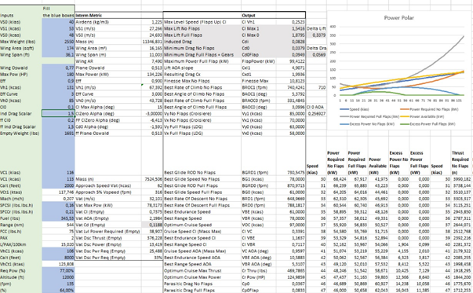
Step 2: Settings Dimensions
The new flight model of Microsoft Flight Simulator relies more on the shape of the aircraft to predict its aerodynamic behavior and we have almost entirely dropped the use of tables of data. Because of this, the correct definition of aircraft dimension data is particularly important.
For this step the aircraft has a 3D mesh that has been integrated into the simulator and can be loaded into the simulator (see documentation about integrating aircraft 3D meshes and creation of aircraft files).
Dimensions are set in the
flight_model.cfgfile, mostly in the[AIRPLANE_GEOMETRY]section but also in the[AERODYNAMICS]section.
We recommend displaying the surfaces in the sim using the debug window Sim Forces.

This activates the display of the surfaces represented by a green box at their center and a green line that represents the force applied on that surface.
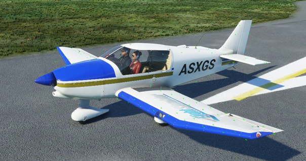
Each part detailed after in this step have a dedicated part in the Geometry panel.
The Wings
- Start by setting the
AreaandSpanin theGeometrypanel.
These parameters are named as following in the flight_model.cfg:
wing_area = 174 ; Wing area S (SQUARE FEET)
wing_span = 36.1 ; Wing span b (FEET) If you don’t have the wingspan, you can visually adjust the number until the surface points are aligned with the ends of the wings.
- Set the
Thickness Ratioof the wing in theGeometrypanel. This is a ratio of the wing size. Most wings are between 2% and 5% thick.
This parameter is named as following in the flight_model.cfg:
wing_thickness_ratio = 0.05 ; Local thickness is local_chord(x) * wing_thickness_ratio, x = lateral coord- Set the wing position. There are two lines of surface, the green points of the front surfaces need to align perfectly with the leading edge of the wings. To achieve this, you need to define the
Sweep, in theGeometrypanel, as well as the longitudinal position. The longitudinal position is defined by positioning the aerodynamics centerAero Center LiftinAerodynamicspanel.
These parameters are named as following in the flight_model.cfg:
wing_sweep = 1 ; Wing sweep (DEGREES)
compute_aero_center = 0
aero_center_lift = -0.05 ; Init to center
(wing_pos_apex_lon is not used, the same result is achieved with compute_aero_center)- Finally, it is required to position the wing vertically and adjust its size by adjusting the vertical position (
Pos Apex Lon), theDihedraland theRoot Chord.
These parameters are named as following in the flight_model.cfg:
wing_pos_apex_vert = 2.65 ; Vertical (y) position of wing apex w.r.t reference datum (FEET)
wing_dihedral = 2 ; Dihedral angle Lambda (DEGREES)
wing_root_chord = 6.5 ; Wing root chord croot (FEET)- At this stage, if you have additional data about the wings, you can set them now. If you don’t you can set default values such as the following. These values mostly impact the handling such as
Camber,Incidence,TwistorOswald Efficiency Factor.
These parameters are named as following in the flight_model.cfg:
wing_camber = 1 ; (DEGREES)
wing_incidence = 1.5 ; Wing incidence (DEGREES)
wing_twist = -3 ; Wing twist epsilon (DEGREES)
oswald_efficiency_factor = 0.77 ; Wing Oswald efficiency factor (non dimensional)At this stage, when seen from the side, you should have the front line for the wing surfaces aligned with the leading edge of the wing, and the rear line of the wing surfaces at the middle of the wing. This way, the sum of the aerodynamics forces will be aligned at 25%MAC. 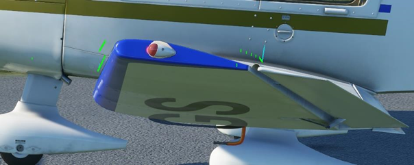
The fuselage
Adjust the fuselage surface positions and dimensions to the visual fuselage with the following parameters: Center, Lenght and Diameter.
These parameters are named as following in the flight_model.cfg:
fuselage_length = -1 ; Nose to tail (FEET)
fuselage_diameter = 2.5
fuselage_center_pos = -6, 0, 0.3 Once this is done, you should see the fuselage surfaces adjusted:
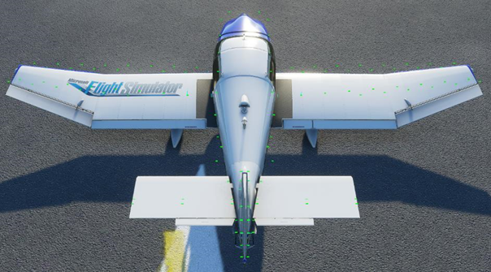
The horizontal tail
Adjust the horizontal tail vertical and longitudinal position with the parameters Pos Lon and Pos Vert.
These parameters are named as following in the flight_model.cfg:
htail_pos_lon = -17.3 ; Longitudinal (z) position of horizontal tail w.r.t reference datum (FEET)
htail_pos_vert = 0.5 ; Vertical (y) position of horizontal tail w.r.t reference datum (FEET) Adjust the horizontal tail Thickness Ratio. This is a ratio of the wing size. Most wings are between 2% and 5% thick.
This parameteris named as following in the flight_model.cfg:
htail_thickness_ratio = 0.025 ; Local thickness is local_chord(x) * htail_thickness_ratio, x = lateral coord Adjust the horizontal tail surface by adjusting the Area and the Elevator Area (the second one is in Controls / Properties). Each area should be the exact area of that control surface, if available. If not available, you can adjust so that the surface points cover the surface well. If the aircraft only has an elevator and no horizontal stabilizer, htail_area should be set to zero.
These parameters are named as following in the flight_model.cfg:
htail_area = 17 ; Horizontal tail area (SQUARE FEET)
elevator_area = 17 ; Elevator area (SQUARE FEET) Adjust the Sweep and Span of the horizontal tail based of data or visual alignment to the mesh:
These parameters are named as following in the flight_model.cfg:
htail_span = 11 ; Horizontal tail span (FEET)
htail_sweep = 10 ; Horizontal tail sweep angle (DEGREES) Leave the horizontal tail Incidence (htail_incidence in the flight_model.cfg) at zero for the moment, this value will be used to set the default trim of the aircraft.
After this step, you should see the surfaces aligned to the horizontal tail:
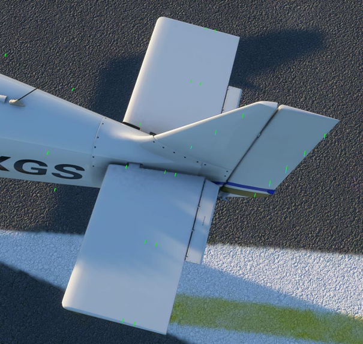
The vertical tail
Adjust the vertical tail vertical and longitudinal position with the parameters Pos Vertand Pos Lon.
These parameters are named as following in the flight_model.cfg:
vtail_pos_lon = -17 ; Longitudinal (z) position of vertical tail w.r.t reference datum (FEET)
vtail_pos_vert = 3 ; Vertical (y) position of vertical tail w.r.t reference datum (FEET) Adjust the vertical tail Thickness Ratio. This is a ratio of the wing size. Most wings are between 2% and 5% thick.
This parameter is named as following in the flight_model.cfg:
vtail_thickness_ratio = 0.033 ; Local thickness is local_chord(x) * vtail_thickness_ratio, x = lateral coord Adjust the vertical tail surface by adjusting the vtail Area and the Rudder Area (the second one is in Controls / Properties). Each area should be the exact area of that control surface, if available. If not available, you can adjust so that the surface points cover the surface well.
These parameters are named as following in the flight_model.cfg:
vtail_area = 15 ; Vertical tail area (SQUARE FEET)
rudder_area = 15 ; Elevator area (SQUARE FEET) Adjust the Sweep and Span of the vertical tail based of data or visual alignment to the mesh:
These parameters are named as following in the flight_model.cfg:
vtail_span = 4.4 ; Vertical tail span (FEET)
vtail_sweep = 35 ; Vertical tail sweep angle (DEGREES) After this step, you should see the surfaces aligned to the vertical tail:
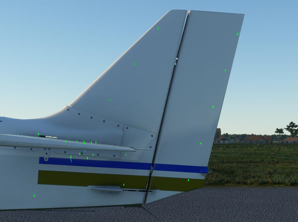
Step 3: Positioning wheels and contacts points
Even though the contact and friction models of Microsoft Flight Simulator have been completely changed, contact points are defined exactly like they were in the past.
Wheels and contact points can be set in the CONTACT/BRAKES panel.
We recommend displaying the surfaces in the sim using the debug window Debug Aircraft Wheels.
This activates the display of the contact points represented by a blue box. Their projection to the nearest surface is represented by a white box, with a white line representing the surface normal. Wheels are represented by yellow boxes with the resulting contact force.
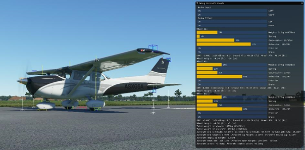
Wheels
Position the wheels by adjusting the first set of contact points through the following parameters:
TypePosCrash velocityBrakeWheel radiusWheel steering angleStatic compressionMax to static compressionDamping ratioExtend timeRetract timeSound IDAirspeed retr.
These parameters are named as following in the flight_model.cfg, in the [CONTACT_POINTS] section and it is possible to add some contact points:
point.number = class, long_pos, lat_pos, vert_pos, crash_velocity, braking_enum, wheel_radius, steer_angle, static_compression, max_to_static_compression_ratio, dapting_ratio, extend_time, retract_time, sound_enum, airpseed_limit, airspeed_damage Example:
point.0 = 1, 1.1, 0, -3.44, 750, 0, 0.5, 10, 0.3185, 2, 0.75, 0, 0, 0, 0, 0
Use the debug window to understand the results of the data set. The contact surface between a wheel and the ground is a surface, but we only simulate a point. In order to give the best stability to the plane, we recommend that the wheel points are positioned at the exterior limits of the wheel’s triangle.
The compression parameters are also displayed in the debug window. We recommend adjusting the compression ratios and distances so that the suspensions are compressed between 30% and 50% when standing on the runway and so that the plane has the correct pitch when standing. A pitch that is too high or too low will negatively impact stability during take-off and landing.
A correctly positioned wheel contact point should look like this:
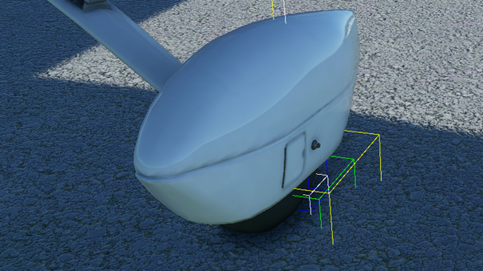
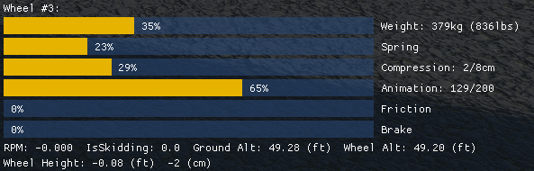
Other contact points
Position the other contact points so that they are aligned correctly. The points are set similarly to the wheels but most fields will be set to zero:
Example:
point.3 = 17, 3.6, 0, 0.9, 1, 0, 0, 0, 0, 0, 0, 0, 0, 0, 0, 0
Step 4: Settings the aircraft weight and weight distribution
Definition of weight distribution has not changed in Microsoft Flight Simulator but as this is a key factor in the flight model, we have developed new tools to helps position weights.
Wheels and contact points can be set in the [WEIGHT AND BALANCE] panel.
We recommend displaying the weight distribution in the sim using the debug window Debug Aircraft Weight.
This activates the display of the weight elements and weight data. The empty CG will be displayed as a two green boxes. The pilots will be represented by grey boxes. Fuel tanks will be brown boxes. The engines will be represented as red boxes.
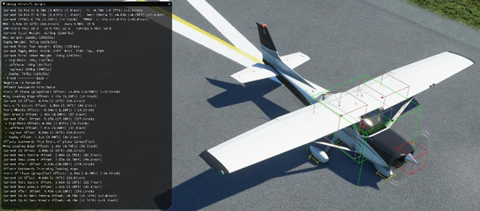
Aircraft weight and CG
Define the Max Gross Weight and the Empty weight.
These parameters are named as following in the flight_model.cfg, in the [WEIGHT_AND_BALANCE] section:
max_gross_weight = 2558 ; Max weight, (LBS)
empty_weight = 1691 ; Empty weight, (LBS) Now define the position of the CG of the empty plane through Empty Weight CG position.
This parameter is named as following in the flight_model.cfg, in the [WEIGHT_AND_BALANCE] section:
empty_weight_CG_position = -3, 0, 0 ; Position of airplane empty weight CG relative to reference datum (FEET), z, x, y Data is not always available to position the empty CG. However, correct positioning of the CG is critical for the plane to fly normally. So here are a few tricks:
- The lateral (x) component of the empty CG position is usually zero.
- The vertical (y) component of the empty CG is usually located close to the middle of the fuselage on the vertical axis. For a high wing, it will be a little higher, for a low wing, a little lower.
- To position the longitudinal (z) component of the empty CG, the best is to use the % MAC. If that information is available, use it directly. If not, usually, the empty CG will be located at around 20% MAC. The % MAC of the empty CG is displayed in the debug window of the weight debug screen. A % MAC outside of the 10% to 35% range may result in an uncontrollable aircraft:
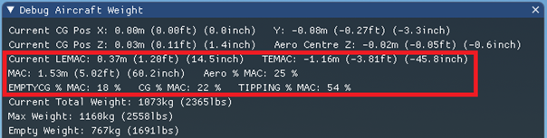
Fuel
This parameter is named as following in the flight_model.cfg, in the [FUEL] section:
LeftMain = -3.6, -3.1, 2.9, 28, 1.5 ; For each tank: Tank position (z longitudinal, x lateral, y vertical) (FEET), total fuel capacity (GALLONS), unusable fuel capacity (GALLONS)This will position the brown boxes representing the fuel tanks on the aircraft:
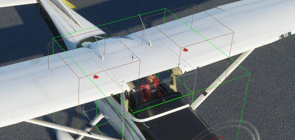
Pilots and other load stations
In WEIGHT AND BALANCE panel, position the pilots and other load stations such as luggage in Station load factory mass part.
These parameters are named as following in the flight_model.cfg, in the [WEIGHT_AND_BALANCE] section:
station_load.0 = 170, -3.7, -1.1, 0.8, Pilot, 0
station_load.1 = 170, -3.7, 1.1, 0.8, Copilot, 0
station_load.2 = 0, -6.2, -0.7, 0.8, Passenger Left, 0
station_load.3 = 0, -6.2, 0.7, 0.8, Passenger Right, 0
station_load.4 = 0, -8, 0, 0, Cargo, 0 These load stations will be represented as grey boxes to help correct positioning:

Engines
This parameter is named as following in the engines.cfg, in the [GENERALENGINEDATA] section:
Engine.0 = 3.5, 0, 1To help with correct positioning, the engines are represented by red boxes. The red box should be positioned where the thrust force will apply. At the center of the propeller or at the exhaust of a jet engine:
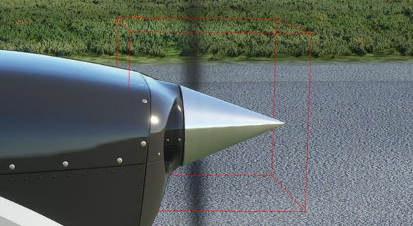
Define moments of inertia
Now that everything influencing the weight of the aircraft and its distribution over the volume of the aircraft, it is time to set the empty aircraft MOIs in the WEIGHT_AND_BALANCE panel through the parameters Empty Weight Pitch MOI, Empty Weight Roll MOI, Empty Weight Yaw MOI and Empty Weight Coupled MOI.
These parameters are named as following in the flight_model.cfg, in the [WEIGHT_AND_BALANCE] section:
empty_weight_pitch_MOI = 2457 ; Empty pitch moment of inertia, Jxx (SLUG SQ FEET)
empty_weight_roll_MOI = 2548 ; Empty roll moment of inertia, Jzz (SLUG SQ FEET)
empty_weight_yaw_MOI = 4389 ; Empty yaw moment of inertia, Jyy (SLUG SQ FEET)
empty_weight_coupled_MOI = 100 ; Empty transverse moment of inertia, Jyz (SLUG SQ FEET) If you have that data available, use it. If not, we have developed a tool that computes the MOIs based on the dimensions and geometric shape of the aircraft, now that you have defined everything. In the weight debug window, you will find the result of that MOI calculation. If you don’t have exact data available for the aircraft, we recommend using the data that has been calculated by our system:
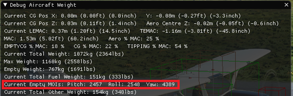
Step 5: Base aerodynamic parameters
The use of geometric information and a surface-based simulation reduces the need for aerodynamic performance data to the strict minimum. However, it is impossible to get exactly the right values and performance just based on geometry. Each aircraft has little imperfections, forms and shapes that are too small and complex to be perfectly simulated in real time.
That’s the reason we are using a normalization system. By entering a very small set of performance values you can define the target performance you need for the aircraft. We run the aircraft through a virtual wind tunnel in real time and perform 100 adjustment iterations to the surface aerodynamic parameters, in order to achieve the performance values you’ve entered.
Base aerodynamics parameters are set in the AERODYNAMICS panel of the Aircraft Editor.
These parameters are also available in the section [AERODYNAMICS] of the flight_model.cfg file.
Drag:
- Cd0.
This is the minimum aerodynamic drag the aircraft produces. This needs to be set in clean, cruise configuration, gears excluded. If gears can be retracted this will be the cruise zero lift drag of the aircraft. If gears cannot be retracted, this will be the cruise zero lift drag minus the gear drag.
This parameter is named as following in theflight_model.cfg, in the[AERODYNAMICS]section:
drag_coef_zero_lift = 0.0327 ; The zero lift drag polar If you know this value exactly, use it. If not, this value is usually of around 0.02 to 0.025 for an aircraft with a glide ratio above 15, 0.03 to 0.04 for aircraft with glide ratios of about 10 and up to 0.1 for some slow bush planes with very low glide ratios.
Enter the gear drag ratio:
This parameter is named as following in theflight_model.cfg, in the[AERODYNAMICS]section:
drag_coef_gear = 0. If you know this value exactly, use it. If not, gear drag is usually between 0.005 and 0.01.
Cl0.
This is the lift the aircraft produces when the drag is minimum. This parameter is a new addition to the parameter set. Indeed, the legacy simulator used the simplified drag formula: Cd = Cd0 + k * Cl². The problem with this simplified formula is that it only allowed to simulate planes that had their minimum drag when the lift coefficient was zero. This is rarely the case. In clean configurations, many planes have their minimum drag at lift coefficients of around 0.1 and in full flap configurations, that parameter can go up to 0.4. The new si mis normalized to a drag polar that follows the following, more accurate formula: Cd = Cd0 + k * (Cl – Cl0)². So we need to define Cl0, which is the lift coefficient that is generated when the plane produces minimum drag. lift_coef_at_drag_zero = 0.1 If you know this value exactly, use it. If not, this value is usually of around 0.1 in clean configuration.- Now we need to define how lift impacts drag, so that the wind tunnel normalization system can adjust the surfaces to match the right drag polar. This is achieved through the legacy Oswald efficiency factor:
oswald_efficiency_factor = 0.77 ; Wing Oswald efficiency factor e (non-dimensional) And a new factor that allows to scale up or down depending on the polar curve: induced_drag_scalar = 1.5 If you know the Oswald coefficient of the plane use it. If not, the Oswald is usually between 0.7 and 0.8. 0.75 is a good default value. The induced drag scalar is usually a little above 1. Indeed, because we use the advanced drag polar formula, our drag is proportional to (Cl – Cl0)² and therefore smaller than the simplified drag that was proportional to Cl². Because of that, we need to have a larger k and therefore a induced drag scalar larger than 1. If you have this value, use it. If not, a value between 1.2 and 1.5 is usually fine. If this value is above 1.5, the plane will generate a lot of drag a slow speed. If the value is closer to 1, it will glide very easily at slow speeds.
- Now we need to define how lift impacts drag, so that the wind tunnel normalization system can adjust the surfaces to match the right drag polar. This is achieved through the legacy Oswald efficiency factor:
Lift
Similarly to drag, lift is calculated based on the geometry and shape of the aircraft. But because the surfaces and shape of the aircraft are never perfect, we, again, use our wind tunnel normalization process to adjust the aerodynamic parameters of the surfaces so that they produce the right lift.
To define the lift curve, we use a sub section of the legacy lift table. The only parameters that are key now in this table, are the lift coefficient at an angle of attack of zero, and the maximum clean lift coefficient at the stall angle of attack.
lift_coef_aoa_table = -3.15:0, -0.8:-1.029, -0.4:-0.789, -0.2:-0.572, -0.1:-0.375, 0:0.257, 0.2:1.408, 0.23:1.474, 0.26:1.5416, 0.29:1.528, 0.31:1.466, 0.4:0.842, 0.8:1.046, 3.15:0
These are the only ones that are used for the wind tunnel normalization of the new aerodynamics model. The other values are necessary only for compatibility with the legacy simulation and can be ignored at this stage. So a simplified table at this stage could look like this:
lift_coef_aoa_table = -3.15:0, -0.8:-1.029, 0:0.257, 0.26:1.5416, 3.15:0
To help understand the lift and drag curves of the aircraft, you can enable the following debug option:
active DebugAircraftSim
This will display the curves:
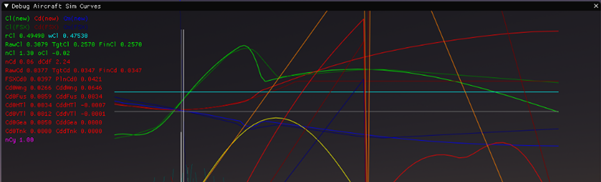
IMPORTANT NOTE: The new surface-based simulation in _GAMENAME__ functions in full 3D and simulates the airflow whatever its direction. We do only normalize the aircraft performance to the airflow moving on the longitudinal axis, with angle of attack between zero and 15°. For airflows that would move 100% laterally or vertically, we use standard aerodynamics surface definitions that cannot be changed at this stage. These situations however are either impossible or extremely rare in normal flight and do only have some importance for aerobatics.
Step 6: Control surfaces
Now your aircraft has everything it needs to fly. We recommend that you start from an example aircraft that already had a similar engine, so that you should even be able to take off. The exact power and performance is unimportant at this stage. You can also press the F10 key, to instantly gain 1000FT and glide the aircraft.
For this step, we recommend enabling the general debug of aircraft data:
• active DebugAircraftTracking
This activates the display of the general flight data. We recommend that you also enable the display of the surfaces and resulting forces as they will be useful at this stage:
• active DebugAircraftSimForces
With both debug tools on screen, you should see the following:
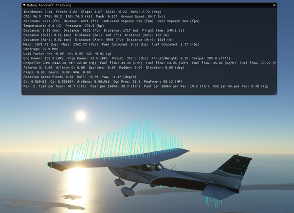
We have found that the easiest and quickest order to define the control surfaces and general stability is: Aileron => Rudder => Elevator.
Ailerons and general stability
We recommend starting with aileron control as it will allow to set the general stability of the aircraft. Start by defining the aileron surface:
aileron_area = 10 ; Elevator area (SQUARE FEET) If you have this exact data, use it. If you don’t have this data, you can set a value that is in the same order of magnitude than the rudder or elevator areas.
Set the aileron up and down limit angles.
aileron_up_limit = 20 ; Aileron max deflection angle (DEGREES)
aileron_down_limit = 15 ; Aileron max deflection down angle (absolute value) (DEGREES) If you have this exact data, use it. If you don’t have this data, you can set the up limit to 20 and the down limit to 15. This type of data is rarely found in a POH but can be found on the website of the FAA.
Now define what percentage of lenght of the wing are covered by the ailerons. Usually, this distance plus the percentage of the length of the wing covered by flaps equal to approximately 100%.
aileron_span_outboard = 0.7 Now define what how much of the control you want to be applied to the ailerons, depending on the speed of the aircraft. This is a table, that defines the ratio of aileron control depending on the amount of dynamic air pressure.
aileron_elasticity_table = 0:1, 25:1, 50:0.75, 75:0.5, 100:0.33 The current dynamic air pressure is displayed on the debug screen to help adjust the aileron control depending on the current speed:
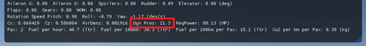
At lower speeds, up to climb speed, this ratio is usually 100% and it starts decreasing at cruise speed and can reach values close to zero when the plane is flying overspeed, above the red bar. (Complete loss of authority).
Now it is time to set the aircraft roll stability. Based on the dimensions and geometric definition of the aircraft, our surface based aerodynamics simulation automatically calculates the minimum rotational air friction. But because a real airplane is not made of perfect surfaces with a perfect shape, real rotational friction is always going to be higher.
Adjust the roll stability in the [FLIGHT_TUNING] section to adjust the rotational friction. You need to enter a value that is higher than zero, for backwards compatibility with the legacy flight model. You can enter 0.01 if you want only the minimum rotational friction. If the plane has too much roll inertia, you can enter higher values:
roll_stability = 0.1 Now the final adjustment is made to define the maximum authority of our ailerons. This will be done to achieve our maximum roll speed that is possible with the aircraft at a given speed. If you have this value, use it. Otherwise, most aircraft can achieve maximum roll speeds of more than 30 degrees per second. For a GA aircraft 30 to 60 degrees per second is a good start. The following parameter allows to scale the aileron authority up or down depending on your needs:
aileron_effectiveness = 1.25 The current roll speed can be found in the debug window. On the next screen you can read the current roll speed, which is maximal as the user is moving the yoke full left. The aileron angles are maximal and, on the plane, you can see the forces that are being applied as a result of the aileron angles:
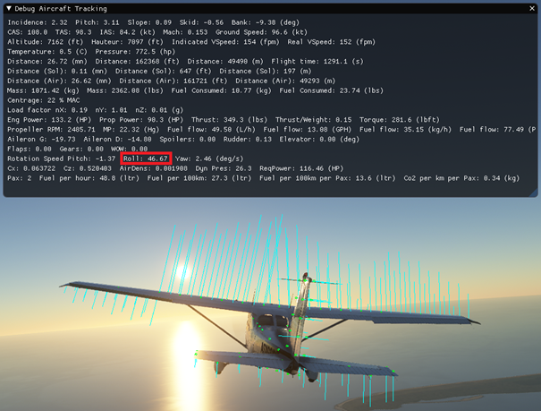
Rudder
The rudder area should already be defined so we will now define the angle limits of the rudder in the [AIRPLANE_GEOMETRY] section of the flight_model.cfg file.
rudder_limit = 16 ; Rudder max deflection angle (absolute value) (DEGREES) If you have this data, use it. If not, it can usually be found on the FAA website. In general rudder limits are between 15 and 30°. The angle needs to be important enough to achieve the maximum possible crosswind landing and decrab the aircraft.
Similarly to the ailerons, you also need to define the maximum deflection ratio based on the speed of the aicraft. Again, use the air dynamic pressure debug here:
rudder_elasticity_table = 0:1, 25:1, 50:0.75, 75:0.5, 100:0.33 At this stage, you should perform an approach test, put the plane at low speed, go full rudder and check the skid angle of the airplane. Most planes are able to skid during a stable cross control by about 10° to 20°.
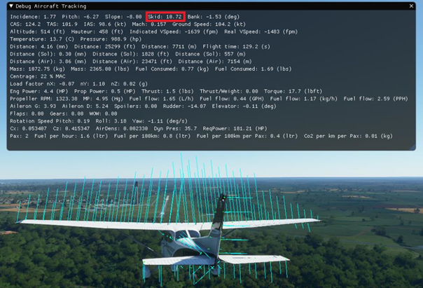
In order to adjust the rudder authority, without changing the rudder surface or maximum deflection angle, which should be based on real data, two parameters are available:
rudder_effectiveness = 1 ; Scales the vertical tail area
rudder_maxangle_scalar = 0.75 ; Scales the rudder deflection maximum angle Also, you may want to go back to adjusting your aileron authority at this stage as most aircraft will have enough aileron control to counter a full rudder deflection and maintain a stable cross controlled flight.
Now it is time to set the aircraft yaw stability. Based on the dimensions and geometric definition of the aircraft, our surface based aerodynamics simulation automacially calculates the minimum rotational air friction. But because a real airplane is not made of perfect surfaces with a perfect shape, real rotational friction is always going to be higher.
Adjust the yaw stability in the [FLIGHT_TUNING] section to adjust the rotational friction. You need to enter a value that is higher than zero, for backwards compatibility with the legacy flight model. You can enter 0.01 if you want only the minimum rotational friction. If the plane has too much yaw inertia, you can enter higher values:
yaw_stability = 0.1Elevator
Before starting the elevator adjustments, it is very important that step 3, weight and balance adjustments, were correctly completed. It may be a good idea at this stage to go over stage 3 again and check the parameters again before moving on.
The elevator area should already be defined so we will now define the angle limits of the elevator in the [AIRPLANE_GEOMETRY] section of the flight_model.cfg file.
elevator_up_limit = 28 ; Elevator max deflection up angle (DEGREES)
elevator_down_limit = 23 ; Elevator max deflection down angle (absolute value) (DEGREES) If you have this data, use it. If not, it can usually be found on the FAA website. In general elevator limits are between 20 and 30°. The up limit angle needs to be important enough to allow flaring the aircraft upon landing.
Similarly to the ailerons and rudder, you also need to define the maximum deflection ratio based on the speed of the aicraft. Again, use the air dynamic pressure debug here:
elevator_elasticity_table = 0:1, 25:1, 50:0.75, 75:0.5, 100:0.33At this stage, you should perform an stall test, put the plane at lower speed, power off, ant try to fly steady without descending. You will need to increase your elevator position closer and closer to the upper limit. When the wing stalls, you will see the lift force vectors on the surfaces change color. Yellow is getting close to stall, red is stalling, blue is a fully stalled surface. Stalling is computed individually for each surface in the new aerodynamics model of _GAMENAME__. We will go more into the details of stalling later. For now we will focus on setting the elevator authority.
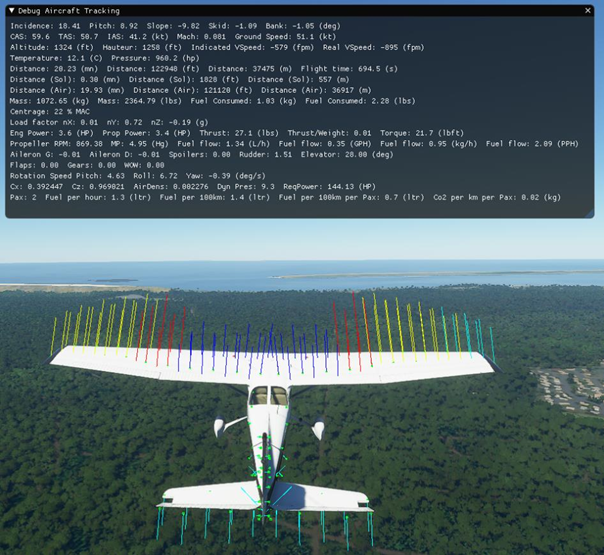
Most aircraft will allow getting very close to the stall speed limit when the elevator is maintained at the maximum upwards deflection. Some planes will never drop and start descending and others will have a sharp drop. Increasing or decreasing the maximum deflection angle of the elevator, or increasing or decreasing the effect of the elevator deflection, can allow to achieve higher or lower maximum angles of attack and therefore change the type of stall of the aircraft.
In order to adjust the elevator authority, without changing the elevator surface or maximum deflection angle, which should be based on real data, two parameters are available:
elevator_effectiveness = 1 ; Scales the horizontal tail area
elevator_maxangle_scalar = 1 ; Scales the elevator deflection maximum angleNow it is time to set the aircraft pitch stability. Based on the dimensions and geometric definition of the aircraft, our surface based aerodynamics simulation automacially calculates the minimum rotational air friction. But because a real airplane is not made of perfect surfaces with a perfect shape, real rotational friction is always going to be higher.
Adjust the pitch stability in the [FLIGHT_TUNING] section to adjust the rotational friction. You need to enter a value that is higher than zero, for backwards compatibility with the legacy flight model.
You can enter 0.01 if you want only the minimum rotational friction. If the plane has too much pitch inertia, you can enter higher values:
pitch_stability = 0.1Step 7: Flaps and spoilers
To define flaps and spoilers, there is both an aerodynamical and a geometrical definition. The geometrical definition will be used to change the position angle.
The aerodynamical definition is done in the [AERODYNAMICS] section of the flight_model.cfg file. The data entered here will be fed into the lift and drag polar curves that will be used to perform the virtual wind tunnel normalization of the aircraft’s surfaces.
Spoilers
If the aircraft does not have spoilers, leave these parameters at zero. If the aircraft has spoilers you can define the lift and drag coefficients that will be added when the spoilers are fully deployed.
lift_coef_spoilers = 0 ; Change in lift due to spoilers
drag_coef_spoilers = 0 ; Change to drag due to spoilersBased on the coefficients you enter here, there will be first an equation solving that will compute the required deflection of the surfaces in the underlying surface based aerodynamics model. Then, the plane will the resulting spoiler deflection will be run 100 times through the virtual wind tunnel and the exact deflection will be readjusted to achieve the exact lift coefficient change desired.
Advanced effects such as pitch moment generated by spoilers will be automatically simulated based on the actualy surface aerodynamics simulation and cannot be adjusted.
Flaps
If the aircraft does not have flaps, leave these parameters at zero. If the aircraft has flaps you can define the lift and drag coefficients that will be added when the flaps are fully deployed.
lift_coef_flaps = 0.3379 ; Change in lift due to flaps
drag_coef_flaps = 0.047At this stage, the lift and drag bonuses of flaps can only be defined globally. In the legacy simulation, they were simply entirely added to the resulting lift and drag of the simulation. In the new simulation, as they are used for the surface deflection and wind tunnel normalization, the simple addition of the lift coefficient cannot be achieved as it is not physically correct at all angles of attack. Our surface deflection and windtunnel normalization guarantee that the total lift and drag added will correspond to the indicated values at the stall angle of attack. At an angle of attack of zero, the resulting increase of lift and drag is usually about half as much and at negative angles of attack, the effect tends to wash out completely. This is a large change compared to the legacy simulation which would have very large and incorrect lift coefficient at negative angles of attack.
Now lets define the geometrical data of the flaps. In the [FLAPS.0] sections you can define as many flaps systems as needed. Most planes will require only one flap system. Parameters that impact the flight model will be required to be set. The amount of wing that is covered with flaps needs to be set. Usually flaps are positioned close to the fuselage, so we do only need to define the ratio of wing span corresponding to how much the flaps will reach out on the wing.
span-outboard = 0.45 ; Outboard span area (added area) (percentage, non dimensional)Now because lift and drag parameters of the flaps are multiplied by the deflection angle in radians, we need a scalar that multiplied the effect of the flaps lift and drag in order to achieve the above wanted values. These need to be defined and are usually between 1.2 and 1.5:
lift_scalar = 1.3 ; Scalar coefficient to ponderate global flap lift coef (non dimensioned)
drag_scalar = 1.3 ; Scalar coefficient to ponderate global flap drag coef (non dimensioned)Advanced effects such as the resulting pitch effect of flaps deployment are automatically simulated based on the actual aerodynamics surface deflection and cannot be controlled at this stage.
Now that flaps and spoilers are defined, it is time to test an approach. You should see the increased lift forces being applied to the wing match the part of the wing where the flaps are located:
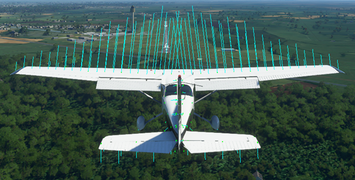
Step 8: Advanced wing effects
Now that the plane should correctly fly and achieve its core performance values, there are a few new advanced fields that can be defined to adjust the shape of the aircraft further and obtain speficic effects.
Wing camber
The wing camber parameter tells the system how the airflow will affect the lift forces as it moves over the wing. When the airflow is moving over the wing, it is bent. The air particles are first accelerating upwards a little and then they accelerate downwards a lot. The resulting reaction creates lift on the wing. When air particles accelerate downwards, the wing accelerates upwards which corresponds to our lift force. This uneven acceleration of air particles, up first and then down, creates a moment on the surface. The larger the difference, the more it wants to pitch down. The effect is fully automatic but this wing camber parameter allows you to define how much of the effect you want to get. Basically, the more the wing is cambered, the larger the difference between the up and then down acceleration of air, and the larger the pitch moment.
wing_camber = 1 ; (DEGREES)NOTE: Wing camber cannot be zero or negative. It has to be slightly positive for our aerodynamics model to work. If you set it to 0, it will default back to 1. A wing camber of 1 degree produces good results in most cases. If there is too much pitch moment on the wing, you can reduce the wing camber.
Wing camber
Also called wing washout, the wing twist parameter affects the incidence angle of the surfaces. On most planes the incidence at the exterior edge of the wing is lower than the incidence close to the fuselage. Because wings stall at a given angle of attack, this allows the stall to occur in the middle of the wing first and then to propagate towards the end of the wing. While this happens, because the end is not stalled yet, the ailerons remain effective allowing roll control over the aircraft. This effect is an important component of whether the aircraft will enter a spin when it stalls.
wing_twist = -3 ; Wing twist epsilon (DEGREES)Wing twist will also result in the wing producing negative lift at the outside and positive lift close to the fuselage when flying at high speeds:
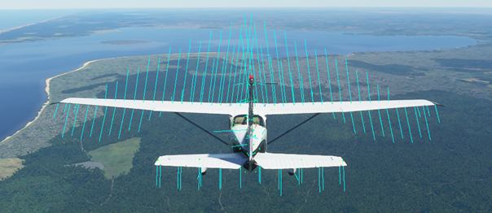
Wing incidence
Most aircraft have some wing incidence to produce some quantity of lift when the aircraft pitch / angle of attack is zero. In the [AIRPLANE_GEOMETRY] section of the flight_model.cfg file, you can set the wing incidence:
wing_incidence = 1.5 ; Wing incidence (DEGREES)As our aircraft will get normalized through the virtual wind tunnel, the overall lift and drag curves will correspond to the data defined during step 5. But setting the correct wing incidence, will affect each surface and will have an effect on the exact level of lift and drag depending on the pitch of the aircaft. Just like the definition of wing twist, it will slightly change the shape lift and drag curves, without changing the lift and drag values at maximum and zero angle of attack.
Step 9: Advanced engine effects
Just like the effects of athmospheric turbulences, basic engine effects, caused by the airflow generated by the engine, such as the increased effect of rudder and elevator, the increased lift of the wings or turbulences generated by the propeller are automatically simulated by the new surface based aerodynamics simulation. When doing the engine tests before takeoff, you will feel the aircraft getting shaken by the prop wash. You will feel the additional authority of the control surfaces the propwash generates aswell as the additional lift as you can see in the image below.
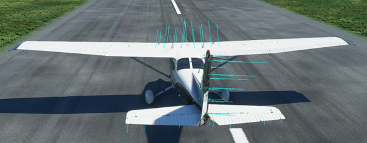
But some, mostly unwanted, effects are also created by the engine and propellers and can be simulated. These effect can be easily defined by following a few simple steps. It is important to understand that engine effects compensate each other and that you cannot only enable one of them or you will get parasitic and annoying roll or yaw movements.
Propeller wash vortex
The most important effect is caused by the propeller wash that isn’t flowing in a straight line backwards but making circles around the aircraft in the form of a vortex. Because of that, it will hit the left horizontal tail, the vertical tail and the right horizontal tail differently, creating a roll and yaw movement:
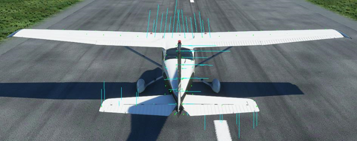
IMPORTANT NOTE: In order to see these effects, make sure the auto rudder / take off rudder assistance is disabled in the assistances piloting options menu.
In order to compensate for the induced yaw moment at cruise speed, we will automatically add a 0.45° deflection of the rudder.
In order to enable this effect and set it’s strength define the engine wash on roll parameter in the [FLIGHT_TUNING] section of the flight_model.cfg file.
engine_wash_on_roll = 1 ; Scale the circular vortex of the engine wash up or downWe recommend setting this effect to 1 which represents the simulation that is closest to reality.
The automatic 0.45° deflection of the rudder won’t be enough to counter the prop wash effect however, and the definition of the one other engine effects will be necessary. The torque on roll effect. Indeed, by making the propeller turn, there is a rotational friction that is caused that makes the plane roll in the opposite direction. We recommend setting the torque on roll effect to 1 first and then to adjust it slightly so that the aircraft does not roll or yaw sideways at cruise speed with cruise power.
torque_on_roll = 1.75Now there is 3 other engine effects that are available and that are encountered mostly during the rotation, at slow speeds or manoeuvers or when the engine power is changed rapidly. These can be defined in the [FLIGHT_TUNING] section of the flight_model.cfg file and we recommend setting them to 1 as they are realistically calculated when applied a scale of one.
p_factor_on_yaw = 1
gyro_precession_on_roll = 1
gyro_precession_on_yaw = 1Step 10: Legacy field definitions
The new surface based aerodynamics simulation does not require many of the performance tables and fiels that used to be defined with the legacy simulation. This is because most of the effects are caused by the more accurate simulation.
However, many systems in the simulator are relying on estimations of moments or forces, even if they are not used by the actual flight model anymore. Example: The autopilot, in order to estimate the amount of elevator requires, will need the Cmde value, ie, the amount of pitch moment caused by the elevator.
In the lecacy simulator, they were defined by the user to make the plane fly, so they were by definition available.
In the new flight model, there physical quantities still exist, but they are now dependent on the geometry and definitions made in the previous steps.
So that the legacy simulation mode and systems like the autopilot can still function optimally, we have created another virtual windtunnel system, that puts our new flight model into the wind tunnel and measures all the quantities that are key for the legacy flight model to function. This way the legacy simulator will still be available, and system like the autopilot will still function optimally.
In order to display the results of this virtual windtunnel process, you need to activate the legacy aircraft debug window:
• active DebugAircraftLegacy
On this screen, you will see on the right column the values that are currently defined in the [AERODYNAMICS] section of the flight_model.cfg file. And for each line, on the left column, you will see the value as it has been measured during the wind tunnel process. 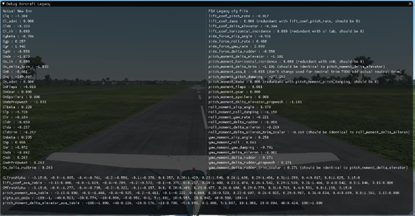
This step consists in entering the values of the left column in the fligth_model.cfg file, for each field as named in the right column. After this process, the right column must feature the same values than the left column.
At the bottom, there are the two only significant performance table that we recommend updating, again with the values measured in the wind tunnel and the values found in the flight_model.cfg file. Both tables need to be identical at the end of this process. >Example:
In our case, the lift_coef_pitch_rate value defined in the flight_model.cfg file is -8.817. The value measured in the wind tunnel is -7.380. So the value in the file needs to be set to -7.380:
lift_coef_pitch_rate = -7.380 ; The change in lift per change in pitch rate NOTE: The values measured in the wind tunnel are extremely sensitive to flight model change. Any change in the process above may completely change all values that need to be defined in this step. This is why we recommend making this step at the end. Now a small change will not completely change the legacy flight model or break systems like the autopilot. So the complete legacy update does not need to be performed for every change and adjustment. But we recommend repeating this final step at the end, after the flight model is adjusted.